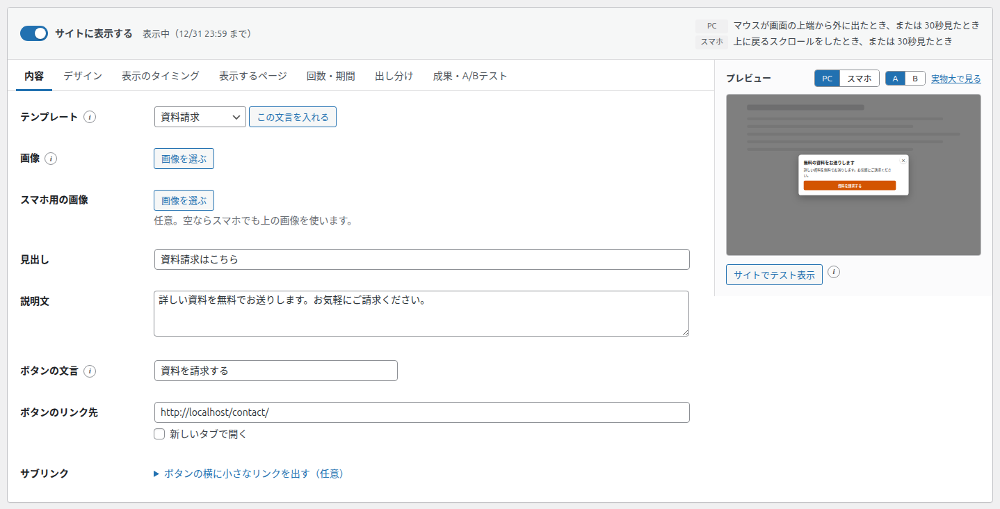
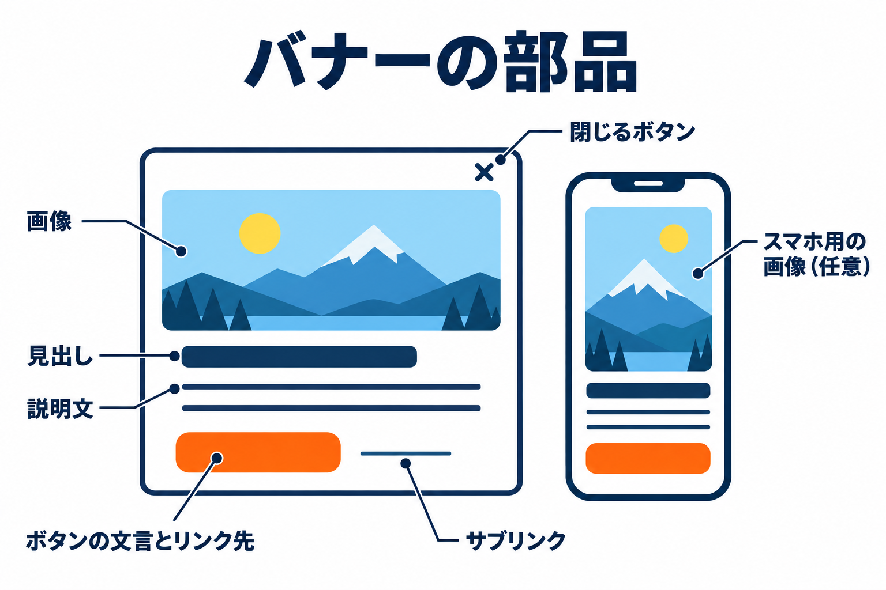
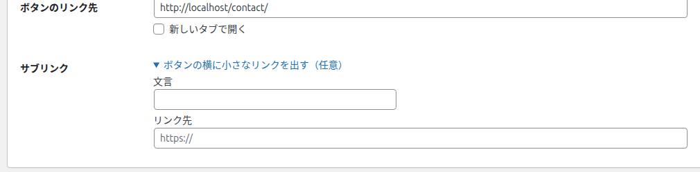

内容タブ
バナーに表示する画像・見出し・説明文・ボタン・小さなリンクを入れるタブです。


項目の一覧
| 項目 | 種類 | 初期値 | 空にしたとき |
|---|---|---|---|
| テンプレート | プルダウン ＋ ボタン | カスタム | - |
| 画像 | 画像を選ぶ | なし | 画像なしのバナーになります |
| スマホ用の画像 | 画像を選ぶ（任意） | なし | スマホでも「画像」を使います |
| 見出し | 1行の文字 | ここに見出しを入力 | 見出しを表示しません |
| 説明文 | 複数行の文字 | お得な情報をお届けします。 | 説明文を表示しません |
| ボタンの文言 | 1行の文字 | 詳しく見る | ボタンを表示しません |
| ボタンのリンク先 | URL ＋ チェックボックス | なし | ボタンを押しても別のページへは移動しません |
| サブリンク（文言・リンク先） | 1行の文字 ＋ URL（任意） | なし | サブリンクを表示しません |
テンプレート
何をするものか: よくある目的の文言（見出し・説明文・ボタンの文言）をまとめて入れます。
いつ使うか: 何を書けばよいか迷うときの下書きとして使います。入れたあとで自由に書き換えられます。
プルダウンからテンプレートを選びます。
横の「この文言を入れる」を押します。
見出し・説明文・ボタンの文言のどれかにすでに文字が入っていると、「見出し・説明文・ボタンの文言を、このテンプレートの文言に置き換えます。よろしいですか？」と確認が表示されます。「OK」を押すと置き換わります。
| テンプレート | 入る見出し | 入る説明文 | 入るボタンの文言 |
|---|---|---|---|
| カスタム | （入れる文言はありません。「この文言を入れる」は押せません） | ||
| クーポン | 【限定】クーポンをプレゼント | このページをご覧の方だけに、特別クーポンをご用意しました。 | クーポンを受け取る |
| 資料請求 | 資料請求はこちら | 詳しい資料を無料でお送りします。お気軽にご請求ください。 | 資料を請求する |
| LINE登録 | LINEで最新情報を受け取る | 友だち追加で、お得な情報や限定のお知らせをお届けします。 | 友だち追加する |
| 関連記事 | こちらの記事もおすすめ | あわせて読みたい関連記事をピックアップしました。 | 関連記事を読む |
| 問い合わせ誘導 | ご不明な点はありませんか？ | お気軽にお問い合わせください。担当者がご対応します。 | 問い合わせる |
テンプレートで変わるのは、見出し・説明文・ボタンの文言の3つだけです。ボタンのリンク先・画像・デザイン・表示のタイミングは変わりません。プルダウンを選んだだけでは文言は入りません（「この文言を入れる」を押したときに入ります）。
画像
何をするものか: バナーの上部に画像を表示します。
「画像を選ぶ」を押します。WordPress のメディアの画面が開きます。
画像を選ぶか、新しい画像をアップロードし、「この画像を使う」を押します。
選んだ画像の縮小版が表示されます。外すときは「外す」を押します。
- 画像だけのバナーにしたいときは、見出しと説明文を空にします。
- 画像の代わりの文字（読み上げ用）には、見出しが使われます。
- 下部バナーでは、画像は左側に小さく表示されます。
スマホ用の画像
スマホで見たときだけ、別の画像を使いたいときに選びます。欄の下に「任意。空ならスマホでも上の画像を使います。」と表示されているとおり、空なら、スマホでも「画像」を使います。縦長の画像に差し替えたいときなどに使います。
A/B テストのパターンに画像を入れた場合は、PC でもスマホでもパターンの画像が使われます（成果・A/Bテストタブ）。
見出し・説明文
見出しは太字で大きく、説明文はその下に表示されます。説明文の改行は、そのまま改行として表示されます。どちらも空にすると表示されません。
ボタンの文言・ボタンのリンク先
- ボタンの文言を空にすると、ボタンを表示しません（「閉じる」の × は常に表示されます）。
- ボタンのリンク先には、押したときに開くページの URL を入れます。https:// から入れてください。
- 新しいタブで開くにチェックを入れると、リンク先を新しいタブで開きます。元のページのバナーは開いたままです。
- 訪問者がボタンを押すと「クリック」として数えます（計測がオンのとき）。
リンク先を空にしたままにすると、ボタンを押しても別のページへは移動しません。公開する前に、サイトでテスト表示でリンク先を確かめてください。
サブリンク
「ボタンの横に小さなリンクを出す（任意）」を押すと、文言とリンク先の欄が開きます。ボタンの横に、下線付きの小さなリンクを表示します（「料金を見る」「くわしくはこちら」など、ボタンほど目立たせたくない案内に使います）。

- 文言とリンク先の両方を入れたときだけ表示されます。
- サブリンクは同じタブで開きます。サブリンクを押しても「クリック」には数えません（クリックとして数えるのはボタンだけです）。